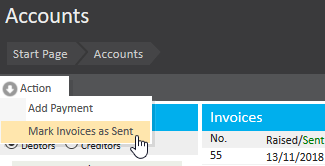

Invoices in Meddbase exist in one of two states: Unsent or Marked as Sent. Unsent invoices are editable and can be modified as needed. Once an invoice is marked as sent, it is finalised and becomes ready for reconciliation. Invoices can be managed on an individual basis, or on mass from the Accounts Tile. In the accounts tile, bulk actions can be taken.
This article explains the process of marking invoices as sent within the Accounts section of the system. It covers how to search for unsent invoices, filter results, and update their status. This is useful for maintaining accurate records and ensuring invoices are properly tracked.
From the Accounts tile, go to Actions > Mark Invoices as Sent:

You can use the filters on the left to search for specific unsent invoices.
Clicking 'Select All' will select all unsent invoices. Entering a comma-separated list of invoice numbers into the 'Details' field at the top, then clicking outside of the box, will select those invoice numbers only:
Clicking 'Mark Sent' at the top and accepting the warning message will mark the invoices as 'Sent' on the date specified in the top-right of the window.
These invoices can now be reconciled through payments and additional actions.